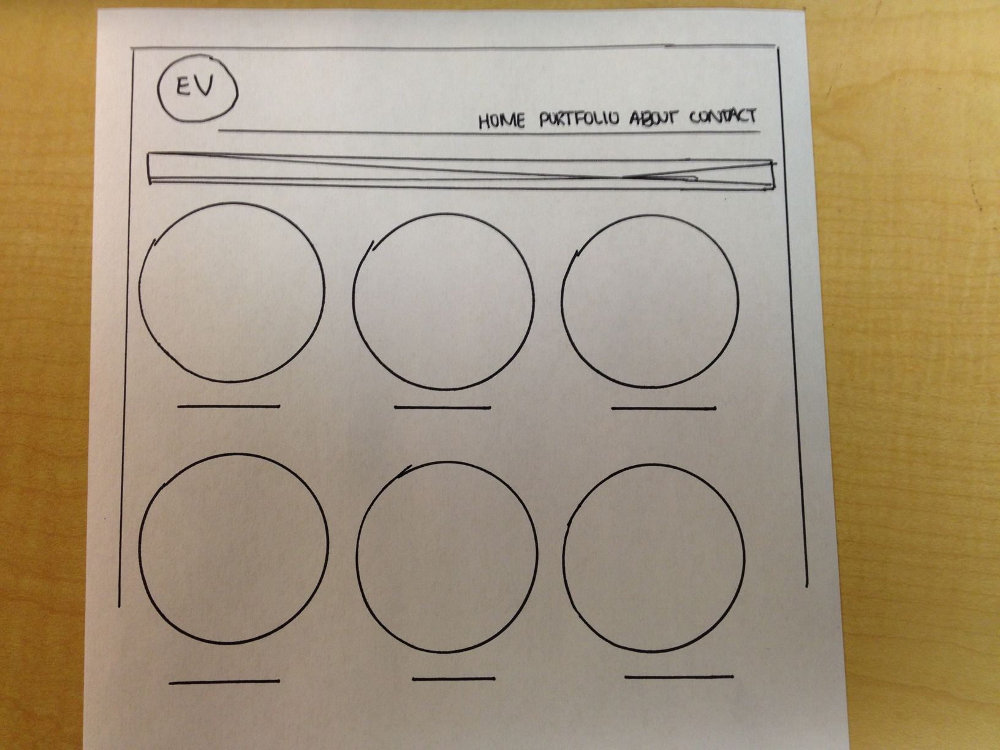

I want to keep my main logo/branding image and navigation consistant on every page, as well as overall design and color scheme.
In an ideal world, I want all of the work featured on the Portfolio page to be organized and displayed as small images that go with the overall theme, and when they are clicked they become bigger and more information about the piece is displayed. I would want there to be filters at the top of the page that gives the user the ability to narrow down what they are viewing between All, Web, Print, and Other. If I am not able to do that, I would want to start by organizing them under these topics in the first place, so it is easy to look at pieces the user is interested in. I want this page to be mostly images, and have very little text because that is what the viewer will want to see versus a long explanation of everything I have ever done. I think for a page like this, images speak louder than words.
